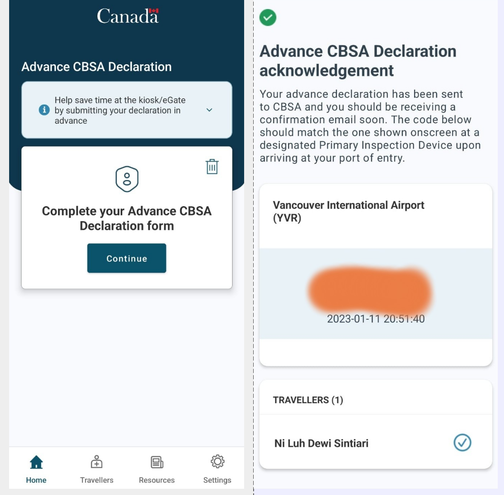
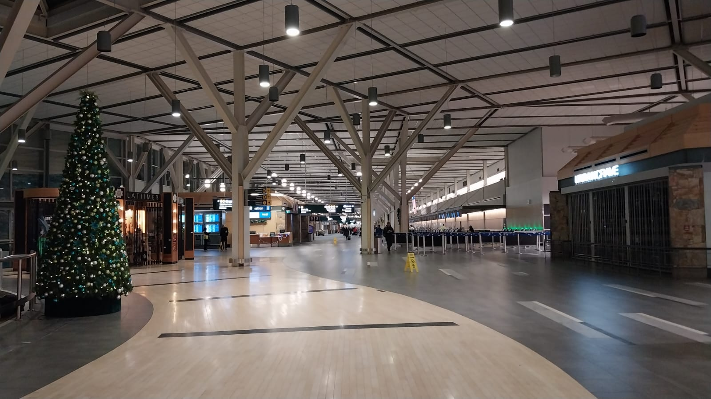

First week in Canada, mild winter.
Malam ini adalah malam ke-sepuluhku di Waterloo. Karena aku masih struggle dengan jet-lag dan kesulitan tidur, aku mau bercerita tentang perjalananku hingga sampai di Waterloo. Untuk proses pembuatan VISA, dapat dibaca pada tulisanku di thread pertama.
Tanggal 30 Desember 2022, aku berangkat dari rumahku di Buleleng menuju bandara Ngurah Rai Denpasar. Penerbanganku hari itu dijadwalkan pukul 15.45, dan biasanya perjalanan ke bandara membutuhkan waktu sekitar 3.5-4 jam. Seperti keberangkatan-keberangkatanku sebelumnya, hari itu keluargaku beramai-ramai mengantarku untuk berangkat ke Kanada. Inilah hal yang selalu meninggalkan kesan bahagia saat akan pergi. Kebersamaan ini sangat manjur untuk mengurangi rasa sedih dan berat hati karena akan pergi jauh dari rumah dan keluarga.
Penerbanganku dijadwalkan dari Denpasar ke Vancouver, dengan satu kali transfer di Taiwan Taoyuan airport, dengan menggunakan pesawat China Airlines. Proses check-in kali ini berjalan tidak terlalu lancar. Seperti biasa, staf maskapai yang bertugas melakukan verifikasi dokumen untuk keberangkatanku, seperti VISA, appointment letter, surat pengantar dari kampus, dan sebagainya. Namun mampaknya, petugas check in yang melayaniku belum cukup berpengalaman, karena proses verifikasi berlangsung agak lama, dan berulangkali dia bertanya pada rekan kerjanya untuk memeriksa keabsahan dokumenku. Ditambah, bagasiku yang sedikit berlebih. Untuk penerbangan ini, aku mendapatkan hak 2 x 23 kg checked baggage, dan aku membawa sebuah koper besar dengan berat 24.5 kg, sehingga aku harus mengurangi beberapa barang di bagasiku.
Proses selanjutnya berjalan lancar. Di counter check-in, diinformasikan bahwa penerbanganku ke Taoyuan hari itu akan mengalami keterlambatan selama kurang lebih 20 menit. Namun pada kenyataannya, lewat dari satu jam, belum juga melakukan boarding ke pesawat. Setelah menunggu sekian lama, akhirnya kami masuk ke pesawat.
Persiapan di dalam pesawat selesai, dan aku langsung tertidur sembari menunggu pesawat untuk lepas landas. Mungkin efek kelelahan atau minum obat anti mabuk. Setelah beberapa saat, aku menyadari bahwa pesawat masih di darat, dan sedang dilakukan cleaning untuk persiapan keberangkatan. Rasanya aku tidur sudah cukup lama, dan benar saja ketika kuperiksa, sudah hampir 45 menit kami berada di dalam pesawat. Oh ya Tuhan, maskapai tidak menginformasikan tentang keterlambatan ini sebelumnya. Agak mengecewakan karena maskapai sekelas China Airlines yang kupikir cukup bagus ternyata tidak memiliki manajemen yang cukup baik.

Penerbangan ke Taiwan memakan waktu selama kurang lebih 5 jam. Karena delay yang cukup lama di bandara Ngurah Rai, waktu transitku di Taiwan hanya sekitar 1 jam 15 menit, dan aku harus buru-buru menuju transfer gate untuk penerbangan berikutnya ke Vancouver. Terminal untuk penerbangan berikutnya berbeda dengan terminal terminal kedatangan pada penerbangan sebelumnya, sehingga harus pindah terminal, dengan menggunakan skytrain. Untunglah proses transfer di Taiwan tidak terlalu rumit dan berjalan dengan lancar.
Penerbangan ke Vancouver ditempuh selama kurang lebih 11 jam. Pada penerbangan ini aku mendapatkan tempat duduk di bagian tengah. Sungguh bukan tempat duduk yang nyaman untuk penerbangan jarak jauh. Menurutku, tempat duduk paling baik untuk penerbangan jarak jauh adalah tempat duduk yang dekat dengan koridor. Dalam penerbangan ini, kita mendapatkan makan sebanyak tiga kali, untuk dinner, breakfast, dan lunch, sesuai dengan waktu tujuan (yaitu waktu di Vancouver). Makanan yang disediakan ada dua pilihan yaitu ala Chinese dan Western. Makanan yang disediakan tidak terlalu spesial namun tidak buruk juga. Namun sangat disayangkan bahwa dalam penerbangan dengan China Airlines ini, penumpang tidak disediakan night flight kit.
Pukul 18.20, pesawat mendarat di Vancouver International Airport. Syukurnya cuaca di Vancouver saat itu cukup baik dan pesawat mendarat dengan sempurna. Padahal pada minggu sebelumnya, bandara Vancouver sempat ditutup karena adanya winter storm. Pihak pengelola bandara tidak siap mengantasipasi hal tersebut dan kekacauan terjadi di area bandara (baca di <sini).
Pasca pendaratan di Vancouver, aku menuju arrival (kedatangan). Ini karena penerbangan berikutnya menuju Waterloo merupakan penerbangan lokal Kanada, sehingga aku harus mengambil bagasi terlebih dahulu, untuk kemudian melakukan check-in ulang penerbangan ke Waterloo. Untuk itu, aku menuju area imigrasi. Oh ya, sebelum pendaratan, ada baiknya kita mengunduh aplikasi “ArriveCAN”. Ini adalah aplikasi dimana kita bisa mendeklarasikan barang bawaan kita ke Kanada sebelum waktu ketibaan. Dengan aplikasi ini, maka kita dapat menghemat waktu untuk melalui Custom (baca di sini). Jangan khawatir jika kita salah input data selama pengisian ArriveCAN ini, sebab data yang di-input dapat masih ditinjau dan diverifikasi kembali ketika nanti sudah sampai di Kanada.
Perlu diperhatikan bahwa barang-barang yang boleh dibawa ke Kanada (terutama dalam hal produk makanan berbahan dasar daging ataupun tumbuhan) cukup dibatasi. Aturan terkait dengan hal ini bahkan aku rasa lebih ketat jika dibandingkan dengan penerbangan ke Eropa pada umumnya (dapat dicek di tautan berikut). Jadi, kita harus lebih berhati-hati dalam membawa produk dari luar Kanada, jika tidak ingin terlibat masalah atau menemui kesulitan saat melalui Custom.
Nah, kembali ke prosedur ketibaan. Jika sudah mengisi form melalui aplikasi ArriveCAN, maka setibanya di border kita hanya cukup memindai (scan) pasport kita di self-service machine yang telah disediakan di sana. Pada mesin tersebut, kita juga dapat meninjau kembali data yang sudah kita input di aplikasi ArriveCAN sebelumnya. Jika mengalamin kesulitan, maka kita dapat meminta bantuan. Pada saat itu, mesin yang aku gunakan tidak dapat memindai pasportku. Nah ketika aku betanya pada petugas yang ada di sana, ia hanya mengarahkanku untuk melakukan input data secara manual. Mungkin karena cukup ramai, maka petugas tersebut enggan membantu secara langsung. Untungnya setelah berpindah-pindah, ada mesin yang dapat memindai pasport-ku dengan baik. Setelahnya, foto diri kita akan diambil secara otomatis oleh mesin tersebut, kemudian mesin akan mencetak form deklarasi Custom yang sudah kita isikan sebelumnya.
Setelah mendapatkan form, maka kita hanya perlu mengantre dan menunggu untuk dilayani oleh petugas imigrasi. Jika aku tidak salah memahami, antrean terbagi menjadi dua, yaitu untuk orang yang baru pertama kali ke Kanada (dengan student permit atau work permit), dan orang yang memang berdomosili di Kanada. Untuk itu, aku mengambil antran di jalur yang pertama. Selanjutnya, petugas hanya akan memeriksa paspor dan VISA kita. Kemudian, kita diminta untuk mengambil bagasi tersebih dahulu, dan selanjunya diarahkan menuju Immigration Office untuk penerbitan Work Permit (atau Student Permit untuk mahasiswa). Sebelumnya, Hal ini cukup berbeda dengan pengalamanku saat di Prancis dulu. Ketika di Prancis, kita sudah mendapatkan student permit dari kedutaan secara langsung sebelum ketibaan di Prancis. Namun untuk Kanada, student permit atau work permit baru bisa diterbitkan setelah kita melewati border (imigrasi).
Proses penerbitan official work permit pada saat itu cukup cepat, kurang dari 30 menit, karena memang bukan peak season untuk ketibaan di Kanada. Kita biasanya tidak diizinkan untuk membawa bagasi besar ke dalam Immigration office. Bagasi dapat disimpan di aula sekitar Immigration office. Jadi kita harus ekstra berhati-hati dalam meninggalkan barang, khawatir jika ada yang mengambilnya. Sebaiknya barang-barang berharga dibawa masik saja, dan dimasukkan ke dalam ransel.
Aku memiliki jeda waktu sekitar 18 jam sejak kedatangan hingga penerbangan berikutnya di siang hari esok. Seperti yang sudah aku ceritakan pada part 1 thread ini, karena kekhawatiran akan terjadi keterlambatan pada proses imigrasi, aku mengambil penerbangan di hari berikutnya. Jadi siswa waktu tersebut aku habiskan di bandara Vancouver. Ternyata cukup banyak juga pelancong yang menghabiskan malam di sana. Karena cuaca yang juga cukup bersahabat, suhu di dalam airport juga tidak terlalu dingin saat itu.
Untuk beberapa jam pertama, aku menghabiskan waktu di area terminal kedatangan yang masih terletak di dalam bandara. Alasannya, karena aku melihat ada tempat duduk yang dekat dengan soket listrik. Sehingga menurutku, akan lebih mudah jika aku harus berkerja dengan laptop sambil mengecas. Di bandara Vancouver sebenarnya terdapat hotel, yaitu Fairmont Vancouver Airport (lihat di sini). Hotel yang berkelas, namun dengan harga yang tentu saja cukup tinggi (yang tidak masuk ke dalam buget perjalananku). Di sekitar bandara juga terdapat banyak pilihan hotel dengan harga yang sedikit lebih murah. Sebenarnya, kita juga dapat memesan hotel atau hostel di daerah downtown, sebab akses ke sana juga tidak susah karena terdapat metro yang secara langsung dapat mengantarkan kita ke pusat kota Vancouver.
Anyway, aku menghabiskan malam itu di airport. Setelah jenuh berada di terminal kedatangan, aku mencoba naik ke lantai 3 menuju daerah terminal keberangkatan. Bandara Vancouver memiliki akses antar-terminal yang cukup bagus, karena kita dapat mengakses beberapa terminal tanpa harus keluar gedung. Tiba di check-in area, tampak banyak orang sudah bermukim. Banyak yang tiduran di kursi, dan beberapa ada yang tiduran di lantai. Area terminal tidak terlalu dingin (saat itu aku mengenakan celana kain panjang, jaket tebal, kupluk, dan sarung tangan). Di dekat kursi-kursi tersebut terdapat pilar yang dilengkapi dengan soket listrik. Namun jaraknya tidak terlalu dekat dengan kursi, jadi kurang praktis jika kita ingin tiduran sambil mengecas (lebih baik sediakan power bank). Toilet terletak tidak jauh dari sana. Yang sedikit membuat susah adalah karena saat itu, aku membawa koper besar, sehingga jika ke kamar mandi, koper juga harus dibawa. Sebenarnya, dari informasi yang aku baca, terdapat pusat penitipan barang bawaan terminal tersebut (bisa dicek di sini). Harganya tidak terlalu mahal, tapi memang dasarnya aku malas mengurusnya dan ingin lebih hemat juga.
Kadang mataku ini agak aneh. Di daerah publik seperti itu, entah mengapa aku lebih mudah tertidur. Berbeda halnya dengan jika aku tidur di kamarku, malah sering susah tidur. Jadilah aku habiskan malam itu dengan beristirahat, akibat lelah setelah perjalanan ber-jam-jam lamanya. Oh ya, jika sedang solo traveling seperti ini, ingat selalu untuk menjaga barang bawaan dengan baik dan aman. Terutama pasport dan barang berharga.
Pagi menjelang, suasana semakin ramai. Suhu mejadi semakin dingin, karena banyak orang yang keluar masuk area keberangkatan, sehingga pintu dibuka-tutup berulangkali. Penerbanganku masih 8 jam lagi, dan counter check-in dibuka kurang lebih 5 jam lagi. Kugunakan waktu untuk menyelesaikan slide untuk persiapan perkuliahan semester depan. Sekitar pukul 9.30, mata mulai mengantuk lagi, sementara pukul 10.00, kita sudah diizinkan untuk check-in. Namun karena sudah tidak tahan, aku putuskan untuk tidur sejenak. Jangan lupa untuk menyetel alarm agar tidak kebablasan.
Pukul 10.15 aku sudah bangun lagi dan segera bergegas ke area check-in. Menelusuri area keberangkatan, aku melihat ada antrean untuk Flair Airlines, maskapai dari pesawat yang akan membawaku ke Waterloo. Antreannya sudah sangat panjang. Maka tanpa berbasa-basi lagi, aku langsung mengambil antrean. Sempat sedikit menyesal karena tdai sempat-sempatnya tidur dulu. Tapi ya mau bagaimana lagi, yang namanya kantuk tidak pernah mau untuk berkompromi.
Setelah mengantre selama kurang lebih 15 menit, seorang petugas maskapai berkeliling untuk memeriksa calon penumpang. Ia menanyakan kemana tujuanku, dan aku jawab :”Kitchener”, sesuai dengan nama airport di Waterloo. Dan ternyata, itu adalah antrean untuk penerbangan internasional. Untuk penerbangan domestik, kita masih harus berjalan lagi beberapa meter. Alamakkk! Untung saja mengantrenya baru sebentar.
Akhirnya proses check-in selesai. Tepat pada pukul 13.00 pesawat lepas landas menuju Kitchener airport. Kali ini aku mendapatkan tempat duduk yang dekat dengan koridor. Namun pesawat ini tergolong kecil. Maklum saja, Flair airlines termasuk dalam low-cost carrier (penerbangan bertarif rendah) di Kanada. Yah meskipun harga tiketku pada waktu itu juga tidak jauh lebih murah jika dibandingkan dengan maskapai lain yang lebih terkenal (seperti Westjet misalnya).
Penerbangan selama 4 jam 20 menit itu kulalui dengan tidur. Entah mengapa kantuk selalu saja menyerang tiap kali aku sedang dalam perjalanan. Sekitar pukul setengah sembilan malam, akhirnya pesawat mendarat di Kitchener airport. Mengapa baru sampai di malam hari? Ya itu karena terdapat perbedaan waktu 4 jam antara Vancouver dan Waterloo. Dari Kitchener airport, kita bisa naik taksi ke pusat kota yang jaraknya kurang lebih sekitar 25 km, dengan biaya sekitar 30 CAD. Tapi malam itu aku dijemput oleh supervisorku yang super baik. Malam itu aku menginap di apartemen temanku yang dulu kuliah S3 bersamaku di Prancis. Sungguh lega karena perjalanan berjalan dengan cukup lancar. Ditambah cuaca Waterloo yang sangat bersahabat menyambut kedatanganku. “It’s never been like this during winter”, kata supervisorku. Biasanya winter di Waterloo dipenuhi dengan salju setebal 20 cm. Sungguh I feel so bless.
Malam itu adalah malam tahun baru di Waterloo, dan mungkin mejadi malam lain yang tidak akan aku lupakan sepanjang usiaku. Aku bersyukur karena diberikan kesehatan hingga akhir tahun 2022, dan siap membuka hari-hari yang baru di Waterloo, memulai perjalananku di tahun 2023. Terimakasih untuk semua yang menyumbangkan restu dan doanya padaku untuk perjalanan ini. Happy new year 2023!
First week in Canada, mild winter.

Perjalanan studi ke Lyon.

Seklumit cerita tentang menjadi dosen muda.
Sed varius enim lorem ullamcorper dolore aliquam aenean ornare velit lacus, ac varius enim lorem ullamcorper dolore. Proin sed aliquam facilisis ante interdum. Sed nulla amet lorem feugiat tempus aliquam.